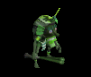
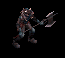
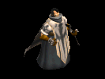
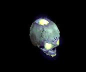
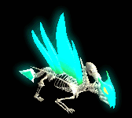
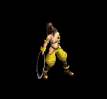
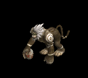
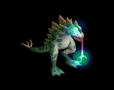

十字架 をドロップするmob一覧
一覧ページへ
| レッドアイ信奉者 | 人間 | 一般1 | |||||||
|---|---|---|---|---|---|---|---|---|---|
 | 笛(410) | 牙(270) | イベント(410) | 鎧(230) | 槍投擲機(210) | 十字架(50) | 双剣(270) | ||
| 原人 | 人間 | 一般2 | |||||||
 | 笛(380) | 牙(250) | イベント(380) | グローブ(210) | 槍投擲機(190) | 十字架(60) | 双剣(250) | ||
| 原始人 | 人間 | 一般3 | |||||||
 | 笛(360) | 牙(240) | 状態異常回復1(360) | 足(200) | 槍投擲機(180) | 十字架(70) | 双剣(240) | ||
| イーター | 人間 | セミ1 | |||||||
|  | 笛(390) | 牙(260) | 状態異常回復1(390) | グローブ(220) | 槍投擲機(200) | 十字架(80) | 双剣(260) | ||
| 呪術者 | 人間 | ボス1 | |||||||
 | 笛(470) | 牙(310) | 状態異常回復1(470) | 足(260) | 槍投擲機(240) | 十字架(90) | 双剣(310) | ||
| 斧槍兵 | 人間 | 一般2 | |||||||
 | 槍(380) | 両手剣(250) | 状態異常回復1(380) | 鎧(210) | 手首(190) | 十字架(120) | 鎌(250) | 箒(380) | |
| コートナイト | 人間 | 一般3 | |||||||
 | 槍(360) | 両手剣(240) | イベント(360) | 兜・帽子(200) | 手首(180) | 十字架(130) | 鎌(240) | 箒(360) | |
| レッドアイ護衛兵 | 人間 | 一般4 | |||||||
|  | 槍(300) | 両手剣(200) | 鍵(20) | 鎧(170) | 手首(150) | 十字架(140) | 鎌(200) | 箒(300) | |
| テンプラー | 人間 | セミ2 | |||||||
 | 槍(420) | 両手剣(280) | 鍵(30) | 兜・帽子(230) | 手首(210) | 十字架(150) | 鎌(280) | 箒(420) | |
| アベンジャー | 人間 | ボス2 | |||||||
 | 槍(490) | 両手剣(330) | 矢(490) | 鎧(270) | 手首(250) | 十字架(160) | 鎌(330) | 箒(490) | 魔弾(490) |
| 偽伝道師 | 人間 | 一般2 | |||||||
 | 鈍器(380) | 翼(250) | 盾(380) | 職業鎧(210) | 冠(190) | 十字架(180) | 水晶(250) | ||
| エクソシスト | 人間 | 一般3 | |||||||
|  | 鈍器(360) | 翼(240) | 状態異常回復2(90) | 職業鎧(200) | 冠(180) | 十字架(190) | 水晶(240) | ||
| 偽聖職者 | 人間 | 一般4 | |||||||
 | 鈍器(300) | 翼(200) | 盾(300) | 職業鎧(170) | 首(150) | 十字架(200) | 水晶(200) | ||
| ダークプリースト | 人間 | セミ2 | |||||||
 | 鈍器(420) | 翼(280) | 状態異常回復2(110) | 職業鎧(230) | 首(210) | 十字架(210) | 水晶(280) | ||
| ダークビショップ | 人間 | ボス2 | |||||||
 | 鈍器(490) | 翼(330) | 盾(490) | 兜・帽子(270) | 首(250) | 十字架(220) | 水晶(330) | ||
| ピエンド | 悪魔 | 一般1 | |||||||
 | 鞭(410) | 杖(270) | 状態異常回復1(410) | 腰(230) | 指輪(210) | 十字架(180) | 本(270) | ||
| レッサーデーモン | 悪魔 | 一般2 | |||||||
 | 鞭(380) | 牙(250) | 矢(380) | マント(210) | 指輪(190) | 十字架(190) | 双剣(250) | 魔弾(380) | |
| デーモン | 悪魔 | セミ2 | |||||||
 | 鞭(420) | 杖(280) | cP回復(420) | 腰(230) | 指輪(210) | 十字架(200) | 本(280) | ||
| デビル | 悪魔 | セミ3 | |||||||
 | 鞭(450) | 牙(300) | 矢(450) | マント(250) | 指輪(230) | 十字架(210) | 双剣(300) | 魔弾(450) | |
| サタン | 悪魔 | ボス2 | |||||||
 | 鞭(490) | 杖(330) | 状態異常回復1(490) | 腰(270) | 指輪(250) | 十字架(220) | 本(330) | ||
| レッドアイ信奉者Ex | 人間 | 一般1 | |||||||
| 笛(410) | 牙(270) | イベント(410) | 鎧(230) | 槍投擲機(210) | 十字架(50) | 双剣(270) | ||
| 原人Ex | 人間 | 一般2 | |||||||
| 笛(380) | 牙(250) | イベント(380) | グローブ(210) | 槍投擲機(190) | 十字架(60) | 双剣(250) | ||
| 原始人Ex | 人間 | 一般3 | |||||||
| 笛(360) | 牙(240) | 状態異常回復1(360) | 足(200) | 槍投擲機(180) | 十字架(70) | 双剣(240) | ||
| イーターEx | 人間 | セミ1 | |||||||
| 笛(450) | 牙(300) | 状態異常回復1(450) | グローブ(250) | 槍投擲機(230) | 十字架(80) | 双剣(300) | |||
| 呪術者Ex | 人間 | ボス1 | |||||||
| 笛(1200) | 牙(800) | 状態異常回復1(1200) | 足(670) | 槍投擲機(600) | 十字架(90) | 双剣(800) | ||
| 斧槍兵Ex | 人間 | 一般2 | |||||||
| 槍(380) | 両手剣(250) | 状態異常回復1(380) | 鎧(210) | 手首(190) | 十字架(120) | 鎌(250) | 箒(380) | |
| コートナイトEx | 人間 | 一般3 | |||||||
| 槍(360) | 両手剣(240) | イベント(360) | 兜・帽子(200) | 手首(180) | 十字架(130) | 鎌(240) | 箒(360) | |
| レッドアイ護衛兵Ex | 人間 | 一般4 | |||||||
| 槍(300) | 両手剣(200) | 鍵(30) | 鎧(170) | 手首(150) | 十字架(140) | 鎌(200) | 箒(300) | ||
| テンプラーEx | 人間 | セミ2 | |||||||
| 槍(650) | 両手剣(430) | 鍵(50) | 兜・帽子(360) | 手首(330) | 十字架(150) | 鎌(430) | 箒(650) | |
| アベンジャーEx | 人間 | ボス2 | |||||||
| 槍(2000) | 両手剣(1330) | 矢(2000) | 鎧(1110) | 手首(1000) | 十字架(160) | 鎌(1330) | 箒(2000) | 魔弾(2000) |
| 偽伝道師Ex | 人間 | 一般2 | |||||||
| 鈍器(380) | 翼(250) | 盾(380) | 職業鎧(210) | 冠(190) | 十字架(180) | 水晶(250) | ||
| エクソシストEx | 人間 | 一般3 | |||||||
| 鈍器(360) | 翼(240) | 状態異常回復2(90) | 職業鎧(200) | 冠(180) | 十字架(190) | 水晶(240) | |||
| 偽聖職者Ex | 人間 | 一般4 | |||||||
| 鈍器(300) | 翼(200) | 盾(300) | 職業鎧(170) | 首(150) | 十字架(200) | 水晶(200) | ||
| ダークプリーストEx | 人間 | セミ2 | |||||||
| 鈍器(650) | 翼(430) | 状態異常回復2(160) | 職業鎧(360) | 首(330) | 十字架(210) | 水晶(430) | ||
| ダークビショップEx | 人間 | ボス2 | |||||||
| 鈍器(2000) | 翼(1330) | 盾(2000) | 兜・帽子(1110) | 首(1000) | 十字架(220) | 水晶(1330) | ||
| ピエンドEx | 悪魔 | 一般1 | |||||||
| 鞭(410) | 杖(270) | 状態異常回復1(410) | 腰(230) | 指輪(210) | 十字架(180) | 本(270) | ||
| レッサーデーモンEx | 悪魔 | 一般2 | |||||||
| 鞭(380) | 牙(250) | 矢(380) | マント(210) | 指輪(190) | 十字架(190) | 双剣(250) | 魔弾(380) | |
| デーモンEx | 悪魔 | セミ2 | |||||||
| 鞭(650) | 杖(430) | cP回復(650) | 腰(360) | 指輪(330) | 十字架(200) | 本(430) | ||
| デビルEx | 悪魔 | セミ3 | |||||||
| 鞭(800) | 牙(530) | 矢(800) | マント(440) | 指輪(400) | 十字架(210) | 双剣(530) | 魔弾(800) | |
| サタンEx | 悪魔 | ボス2 | |||||||
| 鞭(2000) | 杖(1330) | 状態異常回復1(2000) | 腰(1110) | 指輪(1000) | 十字架(220) | 本(1330) | ||
| レッドアイ信奉者Zin | 人間 | 一般1 | |||||||
| 笛(1210) | 牙(810) | イベント(1210) | 鎧(670) | 槍投擲機(610) | 十字架(50) | 双剣(810) | ||
| 原人Zin | 人間 | 一般2 | |||||||
| 笛(1380) | 牙(920) | イベント(1380) | グローブ(770) | 槍投擲機(690) | 十字架(60) | 双剣(920) | ||
| 原始人Zin | 人間 | 一般3 | |||||||
| 笛(1560) | 牙(1040) | 状態異常回復1(1560) | 足(870) | 槍投擲機(780) | 十字架(70) | 双剣(1040) | ||
| イーターZin | 人間 | セミ1 | |||||||
| 笛(650) | 牙(430) | 状態異常回復1(650) | グローブ(360) | 槍投擲機(330) | 十字架(80) | 双剣(430) | |||
| 呪術者Zin | 人間 | ボス1 | |||||||
| 笛(1000) | 牙(670) | 状態異常回復1(1000) | 足(560) | 槍投擲機(500) | 十字架(90) | 双剣(670) | ||
| 斧槍兵Zin | 人間 | 一般2 | |||||||
| 槍(1380) | 両手剣(920) | 状態異常回復1(1380) | 鎧(770) | 手首(690) | 十字架(120) | 鎌(920) | 箒(1380) | |
| コートナイトZin | 人間 | 一般3 | |||||||
| 槍(1560) | 両手剣(1040) | イベント(1560) | 兜・帽子(870) | 手首(780) | 十字架(130) | 鎌(1040) | 箒(1560) | |
| レッドアイ護衛兵Zin | 人間 | 一般4 | |||||||
| 槍(1200) | 両手剣(800) | 鍵(70) | 鎧(670) | 手首(600) | 十字架(140) | 鎌(800) | 箒(1200) | ||
| テンプラーZin | 人間 | セミ2 | |||||||
| 槍(750) | 両手剣(500) | 鍵(80) | 兜・帽子(420) | 手首(380) | 十字架(150) | 鎌(500) | 箒(750) | |
| アベンジャーZin | 人間 | ボス2 | |||||||
| 槍(1100) | 両手剣(730) | 矢(1100) | 鎧(610) | 手首(550) | 十字架(160) | 鎌(730) | 箒(1100) | 魔弾(1100) |
| 偽伝道師Zin | 人間 | 一般2 | |||||||
| 鈍器(1380) | 翼(920) | 盾(1380) | 職業鎧(770) | 冠(690) | 十字架(180) | 水晶(920) | ||
| エクソシストZin | 人間 | 一般3 | |||||||
| 鈍器(1560) | 翼(1040) | 状態異常回復2(390) | 職業鎧(870) | 冠(780) | 十字架(190) | 水晶(1040) | |||
| 偽聖職者Zin | 人間 | 一般4 | |||||||
| 鈍器(1200) | 翼(800) | 盾(1200) | 職業鎧(670) | 首(600) | 十字架(200) | 水晶(800) | ||
| ダークプリーストZin | 人間 | セミ2 | |||||||
| 鈍器(750) | 翼(500) | 状態異常回復2(190) | 職業鎧(420) | 首(380) | 十字架(210) | 水晶(500) | ||
| ダークビショップZin | 人間 | ボス2 | |||||||
| 鈍器(1100) | 翼(730) | 盾(1100) | 兜・帽子(610) | 首(550) | 十字架(220) | 水晶(730) | ||
| ピエンドZin | 悪魔 | 一般1 | |||||||
| 鞭(1210) | 杖(810) | 状態異常回復1(1210) | 腰(670) | 指輪(610) | 十字架(180) | 本(810) | ||
| レッサーデーモンZin | 悪魔 | 一般2 | |||||||
| 鞭(1380) | 牙(920) | 矢(1380) | マント(770) | 指輪(690) | 十字架(190) | 双剣(920) | 魔弾(1380) | |
| デーモンZin | 悪魔 | セミ2 | |||||||
| 鞭(750) | 杖(500) | cP回復(750) | 腰(420) | 指輪(380) | 十字架(200) | 本(500) | ||
| デビルZin | 悪魔 | セミ3 | |||||||
| 鞭(900) | 牙(600) | 矢(900) | マント(500) | 指輪(450) | 十字架(210) | 双剣(600) | 魔弾(900) | |
| サタンZin | 悪魔 | ボス2 | |||||||
| 鞭(1100) | 杖(730) | 状態異常回復1(1100) | 腰(610) | 指輪(550) | 十字架(220) | 本(730) | ||
| ジャイアント骸骨3 Zin | アンデット | ボス1 | |||||||
|  | 冠(150) | 宝石(250) | 十字架(450) | 十字架(650) | ステッキ(850) | 杖(1000) | 本(1000) | ||
| バイキングヘッド1 Zin | アンデット | セミ2 | |||||||
 | 冠(80) | 状態異常回復2(140) | 腕刺青(250) | 十字架(360) | ステッキ(470) | 杖(550) | 本(550) | ||
| デスマスク1 Zin | アンデット | セミ3 | |||||||
 | 職業鎧(110) | 職業鎧(180) | 腕刺青(320) | 十字架(460) | ステッキ(600) | 杖(700) | 本(700) | ||
| デスマスク3 Zin | アンデット | ボス2 | |||||||
 | 鍵(270) | 状態異常回復2(450) | 十字架(810) | 職業鎧(1170) | 状態異常回復1(1530) | HP回復(1800) | |||
| アンデッド魔法師3 Zin | アンデット | セミ2 | |||||||
 | 能力向上2(80) | マント(140) | cP回復(250) | 十字架(360) | 状態異常回復1(470) | イベント(550) | |||
| アンデッドライト3 Zin | アンデット | ボス1 | |||||||
 | 宝石(150) | マント(250) | 腕刺青(450) | 十字架(650) | 肩刺青(850) | HP回復(1000) | |||
| アンデッドメイジ1 Zin | アンデット | セミ2 | |||||||
 | 指輪(80) | マント(140) | 腕刺青(250) | 十字架(360) | 状態異常回復1(470) | 宝石(550) | |||
| ブルーエリゲイト Zin | アンデット | 一般4 | |||||||
|  | 片手剣(30) | 首(50) | 十字架(90) | 十字架(130) | 能力向上2(170) | 兜・帽子(200) | クロー(30) | ||
| ブルーエリゲイト3 Zin | アンデット | ボス2 | |||||||
 | 職業鎧(270) | 首(450) | 牙(810) | 十字架(1170) | 状態異常回復1(1530) | 兜・帽子(1800) | 双剣(810) | ||
| 装甲ボーンキメラ2 Zin | アンデット | セミ3 | |||||||
 | 能力向上2(110) | 首(180) | 牙(320) | 十字架(460) | 槍投擲機(600) | 兜・帽子(700) | 双剣(320) | ||
| ハイエルフ2 Zin | 人間 | セミ2 | |||||||
 | 能力向上2(140) | 状態異常回復2(410) | 腕刺青(280) | 十字架(220) | 槍投擲機(60) | 兜・帽子(80) | |||
| エルフガーディア Zin | 人間 | セミ1 | |||||||
 | 片手剣(90) | 状態異常回復2(260) | 足(180) | 十字架(140) | 槍投擲機(40) | cP回復(50) | クロー(90) | ||
| シーク信者(踊り子) Zin | 人間 | 一般3 | |||||||
|  | 鎧(70) | ブローチ(200) | 弾(130) | 十字架(100) | 腰(30) | 翼(40) | 水晶(40) | ||
| 逃亡魔法師4 Zin | 人間 | ボス1 | |||||||
 | 投擲(250) | ブローチ(750) | 両手剣(500) | 十字架(400) | ステッキ(100) | イベント(150) | 鎌(500) | ||
| 脱獄犯 Zin | 人間 | セミ1 | |||||||
 | 投擲(90) | ブローチ(260) | 両手剣(180) | 十字架(140) | 肩刺青(40) | cP回復(50) | 鎌(140) | ||
| ゴールデンマスク2 Zin | 悪魔 | セミ3 | |||||||
 | 片手剣(460) | 爪(560) | 職業鎧(230) | 十字架(140) | 矢(70) | 兜・帽子(40) | クロー(460) | 魔弾(70) | |
| 剣闘士4 Zin | 悪魔 | ボス3 | |||||||
 | 能力向上2(1560) | 爪(1920) | スリング(790) | 十字架(480) | 状態異常回復1(240) | 兜・帽子(120) | |||
| 古代悪魔 Zin | 悪魔 | 一般4 | |||||||
 | 指輪(130) | ブローチ(160) | 両手剣(70) | 十字架(40) | 弓(20) | 宝石(10) | 鎌(70) | 銃(20) | |
| 死神1 Zin | 悪魔 | セミ1 | |||||||
 | 指輪(230) | ブローチ(280) | 十字架(120) | 十字架(70) | 状態異常回復1(40) | グローブ(20) | |||
| 邪臣2 Zin | 悪魔 | セミ3 | |||||||
 | 鍵(460) | ブローチ(560) | 両手剣(230) | 十字架(140) | 弓(70) | グローブ(40) | 鎌(230) | 銃(70) | |
| 魔女 Zin | 悪魔 | 一般3 | |||||||
 | 鎧(170) | イヤリング(210) | 足(90) | 十字架(50) | ステッキ(30) | 盾(10) | |||
| 魔女3 Zin | 悪魔 | ボス2 | |||||||
 | 鎧(1170) | イヤリング(1440) | 足(590) | 十字架(360) | ステッキ(180) | 盾(90) | |||
| カマキリ戦士1 Zin | 悪魔 | セミ3 | |||||||
 | 投擲(460) | 鈍器(560) | 十字架(230) | 槍(140) | 肩刺青(70) | 翼(40) | 箒(140) | 水晶(40) | |
| パンプキンヘッド3 Zin | 悪魔 | ボス1 | |||||||
 | 指輪(650) | 弾(800) | 腕刺青(330) | 十字架(200) | 腰(100) | HP回復(50) | |||
| エルダーパンプキン Zin | 悪魔 | セミ2 | |||||||
 | 指輪(360) | 首(440) | 弾(180) | 十字架(110) | 腰(60) | HP回復(30) | |||
| ビッグモンキー Zin | 動物 | 一般4 | |||||||
|  | 冠(70) | イヤリング(50) | 牙(40) | 十字架(30) | 肩刺青(20) | 翼(10) | 双剣(40) | 水晶(10) | |
| マウンテン戦士4 Zin | 動物 | ボス3 | |||||||
 | 冠(840) | イヤリング(600) | 牙(480) | 十字架(360) | 矢(240) | HP回復(120) | 双剣(480) | 魔弾(240) | |
| ラジエータカエル2 Zin | 動物 | ボス1 | |||||||
 | 投擲(350) | 爪(250) | 弾(200) | 十字架(150) | 状態異常回復1(100) | イベント(50) | |||
| ハリネズミカエル Zin | 動物 | セミ1 | |||||||
 | 投擲(120) | 爪(90) | 十字架(70) | 腕刺青(50) | 槍投擲機(40) | 杖(20) | 本(20) | ||
| カメレオン2 Zin | 動物 | セミ3 | |||||||
 | 冠(250) | 鈍器(180) | 帰還(140) | 十字架(110) | cP回復(70) | 盾(40) | |||
| ラジエータカメ1 Zin | 動物 | セミ2 | |||||||
|  | 冠(190) | 鈍器(140) | スリング(110) | 十字架(80) | 弓(60) | 盾(30) | 銃(60) | ||
| ラジエータカメ4 Zin | 動物 | ボス3 | |||||||
 | 杖(840) | 鈍器(600) | 弾(480) | 十字架(360) | 弓(240) | 盾(120) | 本(840) | 銃(240) | |
| ダークバッファロ3 Zin | 神獣 | ボス1 | |||||||
 | 指輪(450) | 爪(650) | 弾(350) | 十字架(50) | 肩刺青(100) | 兜・帽子(250) | |||
| エメラルドバッファ1 Zin | 神獣 | セミ2 | |||||||
 | 指輪(250) | 爪(360) | 弾(190) | 十字架(30) | 能力向上2(60) | イベント(140) | |||
| ブルーウイング4 Zin | 神獣 | ボス3 | |||||||
 | 能力向上2(1080) | マント(1560) | 牙(840) | 十字架(120) | 弓(240) | イベント(600) | 双剣(840) | 銃(240) | |
| ウィークネス天使2 Zin | 神獣 | セミ3 | |||||||
 | 鎧(320) | 鈍器(460) | 腕刺青(250) | 十字架(40) | 状態異常回復1(70) | 盾(180) | |||
| イーグルヘッド1 Zin | 神獣 | セミ2 | |||||||
 | 投擲(250) | イヤリング(360) | 腕刺青(190) | 十字架(30) | 肩刺青(60) | イベント(140) | |||
| 時の旅人 Zin | 人間 | 一般4 | |||||||
| 鎧(70) | ブローチ(200) | 弾(130) | 十字架(100) | 腰(30) | 翼(40) | 水晶(40) | |||
| ホワイトゴルゴ Zin | 動物 | 一般4 | |||||||
| 冠(70) | イヤリング(50) | 牙(40) | 十字架(30) | 肩刺青(20) | 翼(10) | 双剣(40) | 水晶(10) | ||
| ホワイトゴルゴ Zin | 動物 | 一般4 | |||||||
| 冠(70) | イヤリング(50) | 牙(40) | 十字架(30) | 肩刺青(20) | 翼(10) | 双剣(40) | 水晶(10) | ||
| 時の旅人 Zin | 人間 | 一般4 | |||||||
| 鎧(70) | ブローチ(200) | 弾(130) | 十字架(100) | 腰(30) | 翼(40) | 水晶(40) | |||
| 原始人Ev | 人間 | 一般3 | |||||||
| 笛(1560) | 牙(1040) | 状態異常回復1(1560) | 足(870) | 槍投擲機(780) | 十字架(70) | 双剣(1040) | ||
| コートナイトEv | 人間 | 一般3 | |||||||
| 槍(1560) | 両手剣(1040) | イベント(1560) | 兜・帽子(870) | 手首(780) | 十字架(130) | 鎌(1040) | 箒(1560) | |
| エクソシストEv | 人間 | 一般3 | |||||||
| 鈍器(1560) | 翼(1040) | 状態異常回復2(390) | 職業鎧(870) | 冠(780) | 十字架(190) | 水晶(1040) | |||
| 偽聖職者Ev | 人間 | 一般4 | |||||||
| 鈍器(1200) | 翼(800) | 盾(1200) | 職業鎧(670) | 首(600) | 十字架(200) | 水晶(800) | ||
| レッドアイ護衛兵Ev | 人間 | 一般4 | |||||||
| 槍(1200) | 両手剣(800) | 鍵(70) | 鎧(670) | 手首(600) | 十字架(140) | 鎌(800) | 箒(1200) | ||
| デビルEv | 悪魔 | セミ3 | |||||||
| 鞭(900) | 牙(600) | 矢(900) | マント(500) | 指輪(450) | 十字架(210) | 双剣(600) | 魔弾(900) | |
| 斧槍兵Sp | 人間 | 一般4 | |||||||
| 槍(1400) | 両手剣(900) | 状態異常回復1(1400) | 鎧(800) | 手首(700) | 十字架(100) | 鎌(900) | 箒(1400) | |
| 古代悪魔Sp | 悪魔 | セミ1 | |||||||
 | 指輪(1500) | ブローチ(700) | 職業鎧(1000) | 十字架(100) | 弓(300) | 冠(1000) | 本(700) | 銃(300) | |
| ブルーエリゲイト4 Sp | アンデット | セミ1 | |||||||
 | 片手剣(300) | 首(500) | 十字架(900) | 能力向上2(500) | 兜・帽子(1000) | クロー(1100) | |||
| アンデッドライト3 Sp | アンデット | セミ1 | |||||||
| 宝石(100) | マント(300) | 腕刺青(400) | 十字架(600) | 肩刺青(900) | HP回復(1000) | |||
| テンプラーSp | 人間 | 一般4 | |||||||
| 槍(1400) | 両手剣(900) | 状態異常回復1(1400) | 鎧(800) | 手首(700) | 十字架(100) | 鎌(900) | 箒(1400) | |
| ピエンドSp | 悪魔 | 一般4 | |||||||
| 鞭(1200) | 杖(800) | 状態異常回復1(1200) | 腰(700) | 指輪(600) | 十字架(200) | 本(800) | ||
| デーモンSp | 悪魔 | セミ1 | |||||||
| 鞭(750) | 杖(500) | cP回復(750) | 腰(400) | 指輪(400) | 十字架(200) | 本(500) | ||
| 踊り子 Sp | 人間 | 一般4 | |||||||
 | 鎧(70) | ブローチ(200) | 弾(130) | 十字架(100) | 腰(30) | 翼(40) | 水晶(40) |